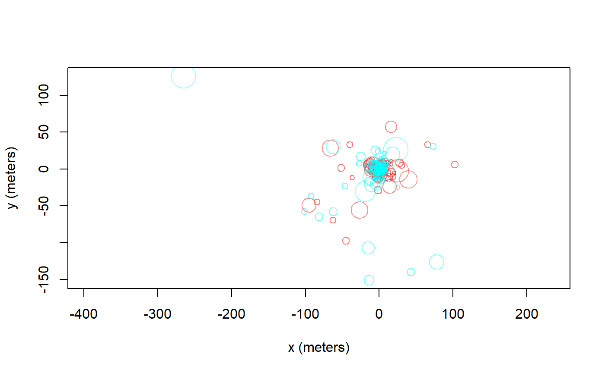

Error calibration
The first step to handling errors is to quantify them. Make sure that your data’s “dilution of precision” (DOP) and error columns import correctly into ctmm. Some tracking device manufacturers provide pre-calibrated errors. These coati were tracked with e-obs GPS collars that features calibrated errors for the location, imported by ctmm into the VAR.xy column, which represents the x and y error variances.
library(ctmm)
data('coati')
names(coati[[1]]) # imported column names## [1] "timestamp" "longitude" "latitude" "t" "HDOP"
## [6] "VAR.xy" "z" "VDOP" "speed" "heading"
## [11] "SDOP" "VAR.v" "x" "y" "vx"
## [16] "vy"plot(coati[[1]],col=rainbow(2),error=2,trans=0.4) # coati plot with 95% error discs
Most GPS devices will only have an HDOP column, which is only proportional to the x and y error standard deviations. The proportionality constant between the HDOP and error standard deviation is known as the user equivalent range error (UERE). The UERE should be estimated from calibration data if not provided by the manufacturer. Without the option of pre-calibrated errors or calibration data, the UERE must be fit simultaneously with the movement model, which is not as reliable. We will cover simultaneous fitting at the end of this vignette.
In the following wood turtle dataset, we have some calibration data and a turtle track. Note that the calibration data must be collected from the same model device as the tracking data.
data(turtle)
names(turtle[[1]]) # data are not yet calibrated## [1] "t" "HDOP" "x" "y"names(turtle) # two calibration datasets and two turtle datasets## [1] "60s" "90s" "F231" "F403"plot(turtle[1:2],col=rainbow(2)) # calibration data only
The uere command is used to estimate the UERE parameter from calibration data. Do not use this command on animal tracking data.
UERE <- uere.fit(turtle[1:2]) # only using calibration data
summary(UERE)## , , horizontal
##
## low ML high
## all 9.940412 10.62878 11.31654For GPS data, the UERE will typically be 10-15 meters. The UERE can be assigned to a dataset with the uere()<- command.
uere(turtle) <- UERE
names(turtle[[3]]) # now the data are calibrated## [1] "t" "HDOP" "x" "y" "VAR.xy"plot(turtle[[3]],error=2) # turtle plot with 95% error discs
Error model selection
Not all GPS devices provide reliable DOP values and sometimes it is not obvious what error information will prove to be the most predictive. Generally speaking, as.telemetry will attempt to import the “best” column from among those that estimate error, DOP value, number of satellites and fix type, inlcuding timed-out fixes (see the timeout argument in help(as.telemetry)). Researchers may want to import the data with different error information, run uere.fit for each error model, and then select among the candidate models. Here we do this by comparing the turtle calibration data with and without HDOP values.
First, we remove the HDOP values in an alternate dataset.
squirtle <- lapply(turtle,function(t){ t$HDOP <- NULL ; t })In other cases, manipulation will need to be performed before importing, so that as.telemetry can format the telemetry object properly. Running uere.fit now results in errors calibrated under the assumption of homoskedastic errors.
UERE2 <- uere.fit(squirtle[1:2])We can now apply model selection to the two UERE fits by summarizing them in a list.
summary(list(HDOP=UERE,homo=UERE2))## ΔAICc Z[red]²
## HDOP 0.0000 6.179499
## homo 350.6833 7.403003Now we can see that the HDOP values yield the better error model, both in terms of AICc and in terms of reduced Z squared, which is a goodness-of-fit statistic akin to reduced chi squared but designed for comparing error models.
Outlier detection
Now we come to the task of identifying outliers. The outlie function uses error information to estimate straight-line speeds between sampled times and distances from the bulk of the data.
outlie(turtle[[3]]) -> OUT
High-speed segments are colored in blue, while distant locations are colored in red. More emphasis is placed on the more extreme locations in the outlie plot. Visually we can see at least one outlier in the wood turtle data. The output of outlie also contains the error-informed speed and distance estimates (in SI units) used to generate the plot.
plot(OUT)
A sustained speed of 0.1 m/s is not biologically implausible for a wood turtle, but this location is highly suspicious, both in terms of speed and lack of proximity. After removing the outlier, we can check the data again.
BAD <- which.max(OUT$speed)
turtle[[3]] <- turtle[[3]][-BAD,]
outlie(turtle[[3]]) -> OUT
Datasets may have multiple outliers. In pathological situations, there may be no clear separation between the normative data and the outliers. This necessitates a better error model, either by improving inadequate (or absent) HDOP estimates or by employing a heavier tailed error distribution (not yet supported).
Variograms and model selection
Variograms
If we were working with ARGOS data or high resolution GPS data on a small animal, then we can get a “nugget” effect in the variogram that looks like an initial discontinuity at short time lags.


The height of this initial discontinuity corresponds to the variance of uncorrelated location errors. The second plot is the kind of initial discontinuity one has with detector array data. The end of the (slope) discontinuity is highlighted with a circle. This discontinuity is smooth because the movement and detection are correlated. The height of this initial discontinuity is also (at least roughly) the variance of the location errors.
Model fitting
Because of some convenient mathematical relations, fitting with telemetry errors involves numerically fitting 1-4 more parameters and is, therefore, slower and less reliable at converging on the MLE than fitting without telemetry error. Therefore, by default, telemetry error is not turned on in ctmm models (error=FALSE). Furthermore, in cases with an error model, ctmm.select() is safer to use than direct applicaiton of ctmm.fit(), because ctmm.select() will start with the simplest “compatible” model and then consider further model features that require numerical optimization in stepwise fashion.
Fitting with calibrated data
For calibrated errors, we have to set error=TRUE in the model guess to fit with telemetry error accounted for.
# automated guestimates with circular covariance and calibrated errors
GUESS <- ctmm.guess(turtle[[3]],CTMM=ctmm(error=TRUE),interactive=FALSE)
# the beta optimizer is more reliable than the default optimizer
# control <- list(method='pNewton',cores=-1) # will use all but one cores
control <- list(method='pNewton',cores=2) # CRAN policy limits us to 2 cores
# stepwise fitting
FIT <- ctmm.select(turtle[[3]],GUESS,control=control,trace=TRUE)## * Fitting model OUF isotropic error.## * Fitting models OUF anisotropic error.## * Fitting models OU anisotropic error, OUf anisotropic error.summary(FIT)## $name
## [1] "OU anisotropic error"
##
## $DOF
## mean area speed
## 12.59923 24.41652 0.00000
##
## $CI
## low ML high
## area (hectares) 12.192645 18.949153 27.17140
## τ[position] (days) 3.693129 6.319045 10.81206trace=TRUE allows us to see the models considered. verbose=TRUE would save each model.
Fitting with uncalibrated data
Fitting with unknown errors is a method of last resort. We have to provide an initial guess for error, which will be the device’s UERE. error=10 is usually a good guess for GPS data. Let’s consider the turtle data again, but without calibrated UERE.
# delete UERE information
uere(turtle[[3]]) <- NULLThe only difference is that you have to provide an initial guess for the UERE. Otherwise, the steps are the same.
# cheat and use previous fit as initial guess
GUESS$error <- 10 # 10 meter error guess
# fit parameter estimates
FIT <- ctmm.select(turtle[[3]],GUESS,control=control)
summary(FIT)## $name
## [1] "OU anisotropic error"
##
## $DOF
## mean area speed
## 13.46152 25.98180 0.00000
##
## $CI
## low ML high
## area (hectares) 12.604531 19.298795 27.396166
## τ[position] (days) 3.467312 5.882935 9.981486
## error (meters) 0.000000 9.317617 63.303346Here, fitting the UERE simultaneously with the movement model produced a consistent result. This will not always be the case.